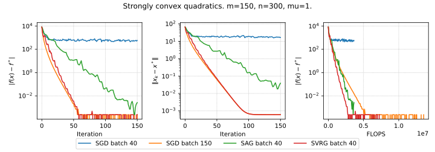
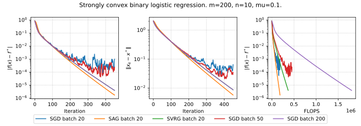

Linear algebra basics
[10 points] Prove that the matrix xy^T has rank equals to one.
[20 points] Find SVD of the following matrices:
- A = \begin{bmatrix} 1\\2\\3 \end{bmatrix}
- A = \begin{bmatrix} 1 & 4\\4 & 8\\3 & 8 \end{bmatrix}
- A = \begin{bmatrix} 0 & 0\\x & 0\\0 & 0 \end{bmatrix}, where x is the sum of your birthdate numbers (day + month)
[10 points] Assume we have a set of data points x^{(i)}\in\mathbb{R}^{n},\,i=1,\dots,m, and decide to represent this data as a matrix
X = \begin{pmatrix} | & & | \\ x^{(1)} & \dots & x^{(m)} \\ | & & | \\ \end{pmatrix} \in \mathbb{R}^{n \times m}.
We suppose that \text{rank}\,X = r.
In the problem below, we ask you to find the rank of some matrix M related to X. In particular, you need to find relation between \text{rank}\,X = r and \text{rank}\,M, e.g., that the rank of M is always larger/smaller than the rank of X or that \text{rank}\,M = \text{rank}\,X \big / 35. Please support your answer with legitimate arguments and make the answer as accurate as possible.
Note that depending on the structure of the matrix X, border cases are possible. Make sure to cover them in your answer correctly.
In applied statistics and machine learning, data is often normalized. One particularly popular strategy is to subtract the estimated mean \mu and divide by the square root of the estimated variance \sigma^2. i.e.
x \rightarrow (x - \mu) \big / \sigma.
After the normalization, we get a new matrix
\begin{split} Y &:= \begin{pmatrix} | & & | \\ y^{(1)} & \dots & y^{(m)} \\ | & & | \\ \end{pmatrix},\\ y^{(i)} &:= \frac{x^{(i)} - \frac{1}{m}\sum_{i=1}^{m} x^{(i)}}{\sqrt{\frac{1}{m}\sum_{i=1}^{m} \left(x^{(i)}\right)^2 - \left(\frac{1}{m}\sum_{i=1}^{m} x^{(i)}\right)^2}}. \end{split}
What is the rank of Y if \text{rank} \; X = r?
Image Compression with Truncated SVD [10 points] Explore image compression using Truncated Singular Value Decomposition (SVD). Understand how varying the number of singular values affects the quality of the compressed image. Implement a Python script to compress a grayscale image using Truncated SVD and visualize the compression quality.
- Truncated SVD: Decomposes an image A into U, S, and V matrices. The compressed image is reconstructed using a subset of singular values.
- Mathematical Representation:
A \approx U_k \Sigma_k V_k^T
- U_k and V_k are the first k columns of U and V, respectively.
- \Sigma_k is a diagonal matrix with the top k singular values.
- Relative Error: Measures the fidelity of the compressed image compared to the original.
import matplotlib.pyplot as plt import matplotlib.animation as animation import numpy as np from skimage import io, color import requests from io import BytesIO def download_image(url): response = requests.get(url) img = io.imread(BytesIO(response.content)) return color.rgb2gray(img) # Convert to grayscale def update_plot(i, img_plot, error_plot, U, S, V, original_img, errors, ranks, ax1, ax2): # Adjust rank based on the frame index if i < 70: rank = i + 1 else: rank = 70 + (i - 69) * 10 reconstructed_img = ... # YOUR CODE HERE # Calculate relative error relative_error = ... # YOUR CODE HERE errors.append(relative_error) ranks.append(rank) # Update the image plot and title img_plot.set_data(reconstructed_img) ax1.set_title(f"Image compression with SVD\n Rank {rank}; Relative error {relative_error:.2f}") # Remove axis ticks and labels from the first subplot (ax1) ax1.set_xticks([]) ax1.set_yticks([]) # Update the error plot error_plot.set_data(ranks, errors) ax2.set_xlim(1, len(S)) ax2.grid(linestyle=":") ax2.set_ylim(1e-4, 0.5) ax2.set_ylabel('Relative Error') ax2.set_xlabel('Rank') ax2.set_title('Relative Error over Rank') ax2.semilogy() # Set xticks to show rank numbers ax2.set_xticks(range(1, len(S)+1, max(len(S)//10, 1))) # Adjust the step size as needed plt.tight_layout() return img_plot, error_plot def create_animation(image, filename='svd_animation.mp4'): U, S, V = np.linalg.svd(image, full_matrices=False) errors = [] ranks = [] fig, (ax1, ax2) = plt.subplots(2, 1, figsize=(5, 8)) img_plot = ax1.imshow(image, cmap='gray', animated=True) error_plot, = ax2.plot([], [], 'r-', animated=True) # Initial empty plot for errors # Add watermark ax1.text(1, 1.02, '@fminxyz', transform=ax1.transAxes, color='gray', va='bottom', ha='right', fontsize=9) # Determine frames for the animation initial_frames = list(range(70)) # First 70 ranks subsequent_frames = list(range(70, len(S), 10)) # Every 10th rank after 70 frames = initial_frames + subsequent_frames ani = animation.FuncAnimation(fig, update_plot, frames=len(frames), fargs=(img_plot, error_plot, U, S, V, image, errors, ranks, ax1, ax2), interval=50, blit=True) ani.save(filename, writer='ffmpeg', fps=8, dpi=300) # URL of the image url = "" # Download the image and create the animation image = download_image(url) create_animation(image)
Convergence rates
[10 points] Determine the convergence or divergence of the given sequences
- r_{k} = k^{\frac{1}{2}}.
- r_{k} = \frac{1}{\sqrt{k}}.
- r_{k} = 0.808^k.
- r_{k} = 0.808^{2^k}.
[10 points] Determine the following sequence \{r_k\} by convergence rate (linear, sublinear, superlinear). In the case of superlinear convergence, additionally, find out whether there is quadratic convergence.
r_k = \dfrac{1}{k!}
[10 points] Determine the convergence or divergence of a given sequence r_k =\begin{cases} \frac{1}{k}, & \text{if } k\text{ is even} \\ e^{-k}, & \text{if } k\text{ is odd} \end{cases}.
[10 points] Determine the convergence or divergence of a given sequence r_k =\begin{cases} \left(\frac{1}{4}\right)^{2^k}, & \text{if } k\text{ is even} \\ \frac{r_{k-1}}{k}, & \text{if } k\text{ is odd} \end{cases}.
[10 points] Let \{r_k\} be a sequence of non-negative numbers given as r_{k+1} = Mr_k^2, where M > 0, r_0 \geq 0. Establish a necessary and sufficient condition on M and r_0 under which the sequence r_k will converge to zero. What is the rate of convergence?
[10 points] Let \left\{ r_k \right\}_{k=m}^\infty be a sequence of non-negative numbers and let s > 0 be some integer. Prove that sequence \left\{ r_k \right\}_{k=m+s}^\infty is linearly convergent with constant q if and only if a the sequence \left\{ r_k \right\}_{k=m}^\infty converged linearly with constant q.
Line search
[10 points] Consider a quadratic function f: \mathbb{R}^n \rightarrow \mathbb{R}, and let us start from a point x_k \in \mathbb{R}^n moving in the direction of the antigradient -\nabla f(x_k). Show that the minimum of f along this direction as a function of the step size \alpha, for a decreasing function at x_k, satisfies Armijo’s condition for any c_1 in the range 0 \leq c_1 \leq \frac{1}{2}. Specifically, demonstrate that the following inequality holds at the optimal \alpha^*:
\varphi(\alpha) = f(x_{k+1}) = f(x_k - \alpha \nabla f(x_k)) \leq f(x_k) - c_1 \alpha \|\nabla f(x_k)\|_2^2
Implementing and Testing Line Search Conditions in Gradient Descent [30 points]
x_{k+1} = x_k - \alpha \nabla f(x_k)
In this assignment, you will modify an existing Python code for gradient descent to include various line search conditions. You will test these modifications on two functions: a quadratic function and the Rosenbrock function. The main objectives are to understand how different line search strategies influence the convergence of the gradient descent algorithm and to compare their efficiencies based on the number of function evaluations.
import numpy as np import matplotlib.pyplot as plt from scipy.optimize import minimize_scalar np.random.seed(214) # Define the quadratic function and its gradient def quadratic_function(x, A, b): return 0.5 * np.dot(x.T, np.dot(A, x)) - np.dot(b.T, x) def grad_quadratic(x, A, b): return np.dot(A, x) - b # Generate a 2D quadratic problem with a specified condition number def generate_quadratic_problem(cond_number): # Random symmetric matrix M = np.random.randn(2, 2) M = np.dot(M, M.T) # Ensure the matrix has the desired condition number U, s, V = np.linalg.svd(M) s = np.linspace(cond_number, 1, len(s)) # Spread the singular values A = np.dot(U, np.dot(np.diag(s), V)) # Random b b = np.random.randn(2) return A, b # Gradient descent function def gradient_descent(start_point, A, b, stepsize_func, max_iter=100): x = start_point.copy() trajectory = [x.copy()] for i in range(max_iter): grad = grad_quadratic(x, A, b) step_size = stepsize_func(x, grad) x -= step_size * grad trajectory.append(x.copy()) return np.array(trajectory) # Backtracking line search strategy using scipy def backtracking_line_search(x, grad, A, b, alpha=0.3, beta=0.8): def objective(t): return quadratic_function(x - t * grad, A, b) res = minimize_scalar(objective, method='golden') return res.x # Generate ill-posed problem cond_number = 30 A, b = generate_quadratic_problem(cond_number) # Starting point start_point = np.array([1.0, 1.8]) # Perform gradient descent with both strategies trajectory_fixed = gradient_descent(start_point, A, b, lambda x, g: 5e-2) trajectory_backtracking = gradient_descent(start_point, A, b, lambda x, g: backtracking_line_search(x, g, A, b)) # Plot the trajectories on a contour plot x1, x2 = np.meshgrid(np.linspace(-2, 2, 400), np.linspace(-2, 2, 400)) Z = np.array([quadratic_function(np.array([x, y]), A, b) for x, y in zip(x1.flatten(), x2.flatten())]).reshape(x1.shape) plt.figure(figsize=(10, 8)) plt.contour(x1, x2, Z, levels=50, cmap='viridis') plt.plot(trajectory_fixed[:, 0], trajectory_fixed[:, 1], 'o-', label='Fixed Step Size') plt.plot(trajectory_backtracking[:, 0], trajectory_backtracking[:, 1], 'o-', label='Backtracking Line Search') # Add markers for start and optimal points plt.plot(start_point[0], start_point[1], 'ro', label='Start Point') optimal_point = np.linalg.solve(A, b) plt.plot(optimal_point[0], optimal_point[1], 'y*', markersize=15, label='Optimal Point') plt.legend() plt.title('Gradient Descent Trajectories on Quadratic Function') plt.xlabel('x1') plt.ylabel('x2') plt.savefig("linesearch.svg") plt.show()
The code above plots this Start by reviewing the provided Python code. This code implements gradient descent with a fixed step size and a backtracking line search on a quadratic function. Familiarize yourself with how the gradient descent function and the step size strategies are implemented.
Modify the gradient descent function to include the following line search conditions:
- Sufficient Decrease Condition
- Curvature Condition
- Goldstein Condition
- Wolfe Condition
- Dichotomy
Test your modified gradient descent algorithm with the implemented line search conditions on the provided quadratic function. Plot the trajectories over iterations for each condition. Choose and specify hyperparameters for inexact line search condition. Choose and specify the termination criterion. Start from the point x_0 = (-1, 2)^T.
Compare these 7 methods from the budget perspective. Plot the graph of function value from the number of function evaluations for each method on the same graph.
Plot trajectory for another function with the same set of methods
f(x_1, x_2) = 10(x_2 − x_1^2)^2 + (x_1 − 1)^2
with x_0 = (-1, 2)^T. You might need to adjust hyperparameters.
Plot the same function value from the number of function calls for this experiment.
Matrix calculus
[10 points] Given a matrix A of size m \times n and a vector x of size n \times 1, compute the gradient of the function f(x) = \text{tr}(A^T A x x^T) with respect to x.
[10 points] Find the gradient \nabla f(x) and hessian f''(x), if f(x) = \dfrac{1}{2} \Vert Ax - b\Vert^2_2.
[10 points] Find the gradient \nabla f(x) and hessian f''(x), if f(x) = \frac1m \sum\limits_{i=1}^m \log \left( 1 + \exp(a_i^{T}x) \right) + \frac{\mu}{2}\Vert x\Vert _2^2, \; a_i, x \in \mathbb R^n, \; \mu>0
[10 points] Compute the gradient \nabla_A f(A) of the trace of the matrix exponential function f(A) = \text{tr}(e^A) with respect to A. Hint: hint: Use the definition of the matrix exponential. Use the definition of the differential df = f(A + dA) - f(A) + o(\Vert dA \Vert) with the limit \Vert dA \Vert \to 0.
[10 points] Calculate the first and the second derivative of the following function f : S \to \mathbb{R}
f(t) = \text{det}(A − tI_n),
where A \in \mathbb{R}^{n \times n}, S := \{t \in \mathbb{R} : \text{det}(A − tI_n) \neq 0\}.
[10 points] Find the gradient \nabla f(X), if f(X) = \text{tr}\left( AX^2BX^{-\top} \right).
Automatic differentiation and jax (2 more problems coming)
You can use any automatic differentiation framework in this section (Jax, PyTorch, Autograd etc.)
[10 points] You will work with the following function for this exercise, f(x,y)=e^{−\left(sin(x)−cos(y)\right)^2}
Draw the computational graph for the function. Note, that it should contain only primitive operations - you need to do it automatically - jax example, PyTorch example - you can google/find your way to visualize it.[10 points] Compare analytic and autograd (with any framework) approach for the calculation of the gradient of:
f(A) = \text{tr}(e^A)[10 points] We can use automatic differentiation not only to calculate necessary gradients but also for tuning hyperparameters of the algorithm like learning rate in gradient descent (with gradient descent 🤯). Suppose, we have the following function f(x) = \frac{1}{2}\Vert x\Vert^2, select a random point x_0 \in \mathbb{B}^{1000} = \{0 \leq x_i \leq 1 \mid \forall i\}. Consider 10 steps of the gradient descent starting from the point x_0: x_{k+1} = x_k - \alpha_k \nabla f(x_k) Your goal in this problem is to write the function, that takes 10 scalar values \alpha_i and return the result of the gradient descent on function L = f(x_{10}). And optimize this function using gradient descent on \alpha \in \mathbb{R}^{10}. Suppose that each of 10 components of \alpha is uniformly distributed on [0; 0.1]. \alpha_{k+1} = \alpha_k - \beta \frac{\partial L}{\partial \alpha} Choose any constant \beta and the number of steps you need. Describe the obtained results. How would you understand, that the obtained schedule (\alpha \in \mathbb{R}^{10}) becomes better than it was at the start? How do you check numerically local optimality in this problem?
[10 points] Compare analytic and autograd (with any framework) approach for the gradient of:
f(X) = - \log \det X
Convexity
[10 points] Show, that \mathbf{conv}\{xx^\top: x \in \mathbb{R}^n, \Vert x\Vert = 1\} = \{A \in \mathbb{S}^n_+: \text{tr}(A) = 1\}.
[5 points] Prove that the set of \{x \in \mathbb{R}^2 \mid e^{x_1}\le x_2\} is convex.
[5 points] Show that the set of directions of the non-strict local descending of the differentiable function in a point is a convex cone.
[10 points] Is the following set convex S = \left\{ a \in \mathbb{R}^k \mid p(0) = 1, \vert p(t) \vert\leq 1 \text{ for } \alpha\leq t \leq \beta\right\}, where p(t) = a_1 + a_2 t + \ldots + a_k t^{k-1} \;?
[10 points] Consider the function f(x) = x^d, where x \in \mathbb{R}_{+}. Fill the following table with ✅ or ❎. Explain your answers
d Convex Concave Strictly Convex \mu-strongly convex -2, x \in \mathbb{R}_{++} -1, x \in \mathbb{R}_{++} 0 0.5 1 \in (1; 2) 2 > 2 [10 points] Prove that the entropy function, defined as
f(x) = -\sum_{i=1}^n x_i \log(x_i),
with \text{dom}(f) = \{x \in \R^n_{++} : \sum_{i=1}^n x_i = 1\}, is strictly concave.
[10 points] Show, that the function f: \mathbb{R}^n_{++} \to \mathbb{R} is convex if f(x) = - \prod\limits_{i=1}^n x_i^{\alpha_i} if \mathbf{1}^T \alpha = 1, \alpha \succeq 0.
[10 points] Show that the maximum of a convex function f over the polyhedron P = \text{conv}\{v_1, \ldots, v_k\} is achieved at one of its vertices, i.e.,
\sup_{x \in P} f(x) = \max_{i=1, \ldots, k} f(v_i).
A stronger statement is: the maximum of a convex function over a closed bounded convex set is achieved at an extreme point, i.e., a point in the set that is not a convex combination of any other points in the set. (you do not have to prove it). Hint: Assume the statement is false, and use Jensen’s inequality.
[10 points] Show, that the two definitions of \mu-strongly convex functions are equivalent:
f(x) is \mu-strongly convex \iff for any x_1, x_2 \in S and 0 \le \lambda \le 1 for some \mu > 0:
f(\lambda x_1 + (1 - \lambda)x_2) \le \lambda f(x_1) + (1 - \lambda)f(x_2) - \frac{\mu}{2} \lambda (1 - \lambda)\|x_1 - x_2\|^2
f(x) is \mu-strongly convex \iff if there exists \mu>0 such that the function f(x) - \dfrac{\mu}{2}\Vert x\Vert^2 is convex.
Optimality conditions
In this section, you can consider either the arbitrary norm or the Euclidian norm if nothing else is specified.
Toy example [10 points] \begin{split} & x^2 + 1 \to \min\limits_{x \in \mathbb{R} }\\ \text{s.t. } & (x-2)(x-4) \leq 0 \end{split}
- Give the feasible set, the optimal value, and the optimal solution.
- Plot the objective x^2 +1 versus x. On the same plot, show the feasible set, optimal point, and value, and plot the Lagrangian L(x,\mu) versus x for a few positive values of \mu. Verify the lower bound property (p^* \geq \inf_x L(x, \mu)for \mu \geq 0). Derive and sketch the Lagrange dual function g.
- State the dual problem, and verify that it is a concave maximization problem. Find the dual optimal value and dual optimal solution \mu^*. Does strong duality hold?
- Let p^*(u) denote the optimal value of the problem
\begin{split} & x^2 + 1 \to \min\limits_{x \in \mathbb{R} }\\ \text{s.t. } & (x-2)(x-4) \leq u \end{split}
as a function of the parameter u. Plot p^*(u). Verify that \dfrac{dp^*(0)}{du} = -\mu^*
[10 points] Derive the dual problem for the Ridge regression problem with A \in \mathbb{R}^{m \times n}, b \in \mathbb{R}^m, \lambda > 0:
\begin{split} \dfrac{1}{2}\|y-b\|^2 + \dfrac{\lambda}{2}\|x\|^2 &\to \min\limits_{x \in \mathbb{R}^n, y \in \mathbb{R}^m }\\ \text{s.t. } & y = Ax \end{split}
[20 points] Derive the dual problem for the support vector machine problem with A \in \mathbb{R}^{m \times n}, \mathbf{1} \in \mathbb{R}^m \in \mathbb{R}^m, \lambda > 0:
\begin{split} \langle \mathbf{1}, t\rangle + \dfrac{\lambda}{2}\|x\|^2 &\to \min\limits_{x \in \mathbb{R}^n, t \in \mathbb{R}^m }\\ \text{s.t. } & Ax \succeq \mathbf{1} - t \\ & t \succeq 0 \end{split}
[10 points] Give an explicit solution to the following LP.
\begin{split} & c^\top x \to \min\limits_{x \in \mathbb{R}^n }\\ \text{s.t. } & 1^\top x = 1, \\ & x \succeq 0 \end{split}
This problem can be considered the simplest portfolio optimization problem.
[20 points] Show, that the following problem has a unique solution and find it:
\begin{split} & \langle C^{-1}, X\rangle - \log \det X \to \min\limits_{x \in \mathbb{R}^{n \times n} }\\ \text{s.t. } & \langle Xa, a\rangle \leq 1, \end{split}
where C \in \mathbb{S}^n_{++}, a \in \mathbb{R}^n \neq 0. The answer should not involve inversion of the matrix C.
[20 points] Give an explicit solution to the following QP.
\begin{split} & c^\top x \to \min\limits_{x \in \mathbb{R}^n }\\ \text{s.t. } & (x - x_c)^\top A (x - x_c) \leq 1, \end{split}
where A \in \mathbb{S}^n_{++}, c \neq 0, x_c \in \mathbb{R}^n.
[10 points] Consider the equality-constrained least-squares problem
\begin{split} & \|Ax - b\|_2^2 \to \min\limits_{x \in \mathbb{R}^n }\\ \text{s.t. } & Cx = d, \end{split}
where A \in \mathbb{R}^{m \times n} with \mathbf{rank }A = n, and C \in \mathbb{R}^{k \times n} with \mathbf{rank }C = k. Give the KKT conditions, and derive expressions for the primal solution x^* and the dual solution \lambda^*.
[20 points] Derive the KKT conditions for the problem
\begin{split} & \mathbf{tr \;}X - \log\text{det }X \to \min\limits_{X \in \mathbb{S}^n_{++} }\\ \text{s.t. } & Xs = y, \end{split}
where y \in \mathbb{R}^n and s \in \mathbb{R}^n are given with y^\top s = 1. Verify that the optimal solution is given by
X^* = I + yy^\top - \dfrac{1}{s^\top s}ss^\top
Supporting hyperplane interpretation of KKT conditions. [10 points] Consider a convex problem with no equality constraints
\begin{split} & f_0(x) \to \min\limits_{x \in \mathbb{R}^n }\\ \text{s.t. } & f_i(x) \leq 0, \quad i = [1,m] \end{split}
Assume, that \exists x^* \in \mathbb{R}^n, \mu^* \in \mathbb{R}^m satisfy the KKT conditions
\begin{split} & \nabla_x L (x^*, \mu^*) = \nabla f_0(x^*) + \sum\limits_{i=1}^m\mu_i^*\nabla f_i(x^*) = 0 \\ & \mu^*_i \geq 0, \quad i = [1,m] \\ & \mu^*_i f_i(x^*) = 0, \quad i = [1,m]\\ & f_i(x^*) \leq 0, \quad i = [1,m] \end{split}
Show that
\nabla f_0(x^*)^\top (x - x^*) \geq 0
for all feasible x. In other words, the KKT conditions imply the simple optimality criterion or \nabla f_0(x^*) defines a supporting hyperplane to the feasible set at x^*.
A penalty method for equality constraints. [10 points] We consider the problem of minimization
\begin{split} & f_0(x) \to \min\limits_{x \in \mathbb{R}^{n} }\\ \text{s.t. } & Ax = b, \end{split}
where $f_0(x): ^n $ is convex and differentiable, and A \in \mathbb{R}^{m \times n} with \mathbf{rank }A = m. In a quadratic penalty method, we form an auxiliary function
\phi(x) = f_0(x) + \alpha \|Ax - b\|_2^2,
where \alpha > 0 is a parameter. This auxiliary function consists of the objective plus the penalty term \alpha \Vert Ax - b\Vert_2^2. The idea is that a minimizer of the auxiliary function, \tilde{x}, should be an approximate solution to the original problem. Intuition suggests that the larger the penalty weight \alpha, the better the approximation \tilde{x} to a solution of the original problem. Suppose \tilde{x} is a minimizer of \phi(x). Show how to find, from \tilde{x}, a dual feasible point for the original problem. Find the corresponding lower bound on the optimal value of the original problem.
Linear programming
📱🎧💻 Covers manufacturing. [20 points] Lyzard Corp is producing covers for the following products:
- 📱 phones
- 🎧 headphones
- 💻 laptops
The company’s production facilities are such that if we devote the entire production to headphone covers, we can produce 5000 of them in one day. If we devote the entire production to phone covers or laptop covers, we can produce 4000 or 2000 of them in one day.
The production schedule is one week (6 working days), and the week’s production must be stored before distribution. Storing 1000 headphone covers (packaging included) takes up 30 cubic feet of space. Storing 1000 phone covers (packaging included) takes up 50 cubic feet of space, and storing 1000 laptop covers (packaging included) takes up 220 cubic feet of space. The total storage space available is 1500 cubic feet.
Due to commercial agreements with Lyzard Corp has to deliver at least 4500 headphone covers and 4000 laptop covers per week to strengthen the product’s diffusion.
The marketing department estimates that the weekly demand for headphones covers, phone, and laptop covers does not exceed 10000 14000, and 7000 units, therefore the company does not want to produce more than these amounts for headphones, phone, and laptop covers.
Finally, the net profit per headphone cover, phone cover, and laptop cover are $5, $7, and $12, respectively.
The aim is to determine a weekly production schedule that maximizes the total net profit.
Write a Linear Programming formulation for the problem. Use the following variables:
- y_1 = number of headphones covers produced over the week,
- y_2 = number of phone covers produced over the week,
- y_3 = number of laptop covers produced over the week.
- y_1 = number of headphones covers produced over the week,
Find the solution to the problem using PyOMO
!pip install pyomo ! sudo apt-get install glpk-utils --quiet # GLPK ! sudo apt-get install coinor-cbc --quiet # CoinORPerform the sensitivity analysis. Which constraint could be relaxed to increase the profit the most? Prove it numerically.
Prove the optimality of the solution [10 points]
x = \left(\frac{7}{3} , 0, \frac{1}{3}\right)^T
to the following linear programming problem:
\begin{split} & 9x_1 + 3x_2 + 7x_3 \to \max\limits_{x \in \mathbb{R}^3 }\\ \text{s.t. } & 2x_1 + x_2 + 3x_3 \leq 6 \\ & 5x_1 + 4x_2 + x_3 \leq 12 \\ & 3x_3 \leq 1,\\ & x_1, x_2, x_3 \geq 0 \end{split}
but you cannot use any numerical algorithm here.
Gradient Descent
Convergence of Gradient Descent in non-convex smooth case [10 points]
We will assume nothing about the convexity of f. We will show that gradient descent reaches an \varepsilon-substationary point x, such that \|\nabla f(x)\|_2 \leq \varepsilon, in O(1/\varepsilon^2) iterations. Important note: you may use here Lipschitz parabolic upper bound:
f(y) \leq f(x) + \nabla f(x)^T (y-x) + \frac{L}{2} \|y-x\|_2^2, \;\;\; \text{for all $x,y$}. \tag{1}
Plug in y = x^{k+1} = x^{k} - \alpha \nabla f(x^k), x = x^k to (Equation 1) to show that
f(x^{k+1}) \leq f(x^k) - \Big (1-\frac{L\alpha}{2} \Big) \alpha \|\nabla f(x^k)\|_2^2.
Use \alpha \leq 1/L, and rearrange the previous result, to get
\|\nabla f(x^k)\|_2^2 \leq \frac{2}{\alpha} \left( f(x^k) - f(x^{k+1}) \right).
Sum the previous result over all iterations from 1,\ldots,k+1 to establish
\sum_{i=0}^k \|\nabla f(x^{i})\|_2^2 \leq \frac{2}{\alpha} ( f(x^{0}) - f^*).
Lower bound the sum in the previous result to get
\min_{i=0,\ldots,k} \|\nabla f(x^{i}) \|_2 \leq \sqrt{\frac{2}{\alpha(k+1)} (f(x^{0}) - f^*)}, which establishes the desired O(1/\varepsilon^2) rate for achieving \varepsilon-substationarity.
How gradient descent convergence depends on the condition number and dimensionality. [20 points] Investigate how the number of iterations required for gradient descent to converge depends on the following two parameters: the condition number \kappa \geq 1 of the function being optimized, and the dimensionality n of the space of variables being optimized.
To do this, for given parameters n and \kappa, randomly generate a quadratic problem of size n with condition number \kappa and run gradient descent on it with some fixed required precision. Measure the number of iterations T(n, \kappa) that the method required for convergence (successful termination based on the stopping criterion).
Recommendation: The simplest way to generate a random quadratic problem of size n with a given condition number \kappa is as follows. It is convenient to take a diagonal matrix A \in S_{n}^{++} as simply the diagonal matrix A = \text{Diag}(a), whose diagonal elements are randomly generated within [1, \kappa], and where \min(a) = 1, \max(a) = \kappa. As the vector b \in \mathbb{R}^n, you can take a vector with random elements. Diagonal matrices are convenient to consider since they can be efficiently processed with even for large values of n.
Fix a certain value of the dimensionality n. Iterate over different condition numbers \kappa on a grid and plot the dependence of T(n,\kappa) against \kappa. Since the quadratic problem is generated randomly each time, repeat this experiment several times. As a result, for a fixed value of n, you should obtain a whole family of curves showing the dependence of T(n, \kappa) on \kappa. Draw all these curves in the same color for clarity (for example, red).
Now increase the value of n and repeat the experiment. You should obtain a new family of curves T(n',\kappa) against \kappa. Draw all these curves in the same color but different from the previous one (for example, blue).
Repeat this procedure several times for other values of n. Eventually, you should have several different families of curves - some red (corresponding to one value of n), some blue (corresponding to another value of n), some green, etc.
Note that it makes sense to iterate over the values of the dimensionality n on a logarithmic grid (for example, n = 10, n = 100, n = 1000, etc.). Use the following stopping criterion: \|\nabla f(x_k)\|_2^2 \leq \varepsilon \|\nabla f(x_0)\|_2^2 with \varepsilon = 10^{-5}. Select the starting point x_0 = (1, \ldots, 1)^T
What conclusions can be drawn from the resulting picture?
Accelerated methods
Local Convergence of Heavy Ball Method. [20 points] We will work with the heavy ball method in this problem
\tag{HB} x_{k+1} = x_k - \alpha \nabla f(x_k) + \beta (x_k - x_{k-1})
It is known, that for the quadratics the best choice of hyperparameters is \alpha^* = \dfrac{4}{(\sqrt{L} + \sqrt{\mu})^2}, \beta^* = \dfrac{(\sqrt{L} - \sqrt{\mu})^2}{(\sqrt{L} + \sqrt{\mu})^2}, which ensures accelerated linear convergence for a strongly convex quadratic function.
Consider the following continuously differentiable, strongly convex with parameter \mu, and smooth function with parameter L:
f(x) = \begin{cases} \frac{25}{2}x^2, & \text{if } x < 1 \\ \frac12x^2 + 24x - 12, & \text{if } 1 \leq x < 2 \\ \frac{25}{2}x^2 - 24x + 36, & \text{if } x \geq 2 \end{cases} \quad \nabla f(x) = \begin{cases} 25x, & \text{if } x < 1 \\ x + 24, & \text{if } 1 \leq x < 2 \\ 25x - 24, & \text{if } x \geq 2 \end{cases}
How to prove, that the given function is convex? Strongly convex? Smooth?
Find the constants \mu and L for a given function.
Plot the function value for x \in [-4, 4].
Run the Heavy Ball method for the function with optimal hyperparameters \alpha^* = \dfrac{4}{(\sqrt{L} + \sqrt{\mu})^2}, \beta^* = \dfrac{(\sqrt{L} - \sqrt{\mu})^2}{(\sqrt{L} + \sqrt{\mu})^2} for quadratic function, starting from x_0 = 3.5. If you have done everything above correctly, you should receive something like
You can use the following code for plotting:
import numpy as np import matplotlib.pyplot as plt import matplotlib.animation as animation from IPython.display import HTML # Gradient of the function def grad_f(x): ... # Heavy Ball method implementation def heavy_ball_method(alpha, beta, x0, num_iterations): x = np.zeros(num_iterations + 1) x_prev = x0 x_curr = x0 # Initialize x[1] same as x[0] to start the algorithm for i in range(num_iterations): x[i] = x_curr x_new = x_curr - alpha * grad_f(x_curr) + beta * (x_curr - x_prev) x_prev = x_curr x_curr = x_new x[num_iterations] = x_curr return x # Parameters L = ... mu = ... alpha_star = ... beta_star = ... x0 = ... num_iterations = 30 # Generate the trajectory of the method trajectory = heavy_ball_method(alpha_star, beta_star, x0, num_iterations) # Setup the figure and axes for the animation fig, (ax1, ax2) = plt.subplots(1, 2, figsize=(7, 3.5)) fig.suptitle("Heavy ball method with optimal hyperparameters α* β*") # Function for updating the animation def update(i): ax1.clear() ax2.clear() # Plot f(x) and trajectory x_vals = np.linspace(-4, 4, 100) f_vals = np.piecewise(x_vals, [x_vals < 1, (x_vals >= 1) & (x_vals < 2), x_vals >= 2], [lambda x: 12.5 * x**2, lambda x: .5 * x**2 + 24 * x - 12, lambda x: 12.5 * x**2 - 24 * x + 36]) ax1.plot(x_vals, f_vals, 'b-') ax1.plot(trajectory[:i], [12.5 * x**2 if x < 1 else .5 * x**2 + 24 * x - 12 if x < 2 else 12.5 * x**2 - 24 * x + 36 for x in trajectory[:i]], 'ro-') # Add vertical dashed lines at x=1 and x=2 on the left subplot ax1.axvline(x=1, color='navy', linestyle='--') ax1.axvline(x=2, color='navy', linestyle='--') # Plot function value from iteration f_trajectory = [None for x in trajectory] f_trajectory[:i] = [12.5 * x**2 if x < 1 else .5 * x**2 + 24 * x - 12 if x < 2 else 12.5 * x**2 - 24 * x + 36 for x in trajectory[:i]] ax2.plot(range(len(trajectory)), f_trajectory, 'ro-') ax2.set_xlim(0, len(trajectory)) ax2.set_ylim(min(f_vals), max(f_vals)) # Add horizontal dashed lines at f(1) and f(2) on the right subplot f_1 = 12.5 * 1.0**2 f_2 = .5 * 2.**2 + 24 * 2. - 12 ax2.axhline(y=f_1, color='navy', linestyle='--') ax2.axhline(y=f_2, color='navy', linestyle='--') # ax1.set_title("Function f(x) and Trajectory") ax1.set_xlabel("x") ax1.set_ylabel("f(x)") ax1.grid(linestyle=":") # ax2.set_title("Function Value from Iteration") ax2.set_xlabel("Iteration") ax2.set_ylabel("f(x)") ax2.grid(linestyle=":") plt.tight_layout() # Create the animation ani = animation.FuncAnimation(fig, update, frames=num_iterations, repeat=False, interval=100) HTML(ani.to_jshtml())Change the starting point to x_0 = 3.4. What do you see? How could you name such a behavior of the method?
Change the hyperparameter \alpha^{\text{Global}} = \frac2L, \beta^{\text{Global}} = \frac{\mu}{L} and run the method again from x_0 = 3.4. Check whether you have accelerated convergence here.
Context: this counterexample was provided in the paper, while the global convergence of the heavy ball method for general smooth strongly convex function was introduced in another paper. Recently, it was suggested, that the heavy-ball (HB) method provably does not reach an accelerated convergence rate on smooth strongly convex problems.
[40 points] In this problem we will work with accelerated methods applied to the logistic regression problem. A good visual introduction to the topic is available here.
Logistic regression is a standard model in classification tasks. For simplicity, consider only the case of binary classification. Informally, the problem is formulated as follows: There is a training sample \{(a_i, b_i)\}_{i=1}^m, consisting of m vectors a_i \in \mathbb{R}^n (referred to as features) and corresponding numbers b_i \in \{-1, 1\} (referred to as classes or labels). The goal is to construct an algorithm b(\cdot), which for any new feature vector a automatically determines its class b(a) \in \{-1, 1\}.
In the logistic regression model, the class determination is performed based on the sign of the linear combination of the components of the vector a with some fixed coefficients x \in \mathbb{R}^n:
b(a) := \text{sign}(\langle a, x \rangle).
The coefficients x are the parameters of the model and are adjusted by solving the following optimization problem:
\tag{LogReg} \min_{x \in \mathbb{R}^n} \left( \frac{1}{m} \sum_{i=1}^m \ln(1 + \exp(-b_i \langle a_i, x \rangle)) + \frac{\lambda}{2} \|x\|^2 \right),
where \lambda \geq 0 is the regularization coefficient (a model parameter).
Will the LogReg problem be convex for \lambda = 0? What is the gradient of the objective function? Will it be strongly convex? What if you will add regularization with \lambda > 0?
We will work with the real-world data for A and b: take the mushroom dataset. Be careful, you will need to predict if the mushroom is poisonous or edible. A poor model can cause death in this exercise.
import requests from sklearn.datasets import load_svmlight_file # URL of the file to download url = 'https://hse24.fmin.xyz/files/mushrooms.txt' # Download the file and save it locally response = requests.get(url) dataset = 'mushrooms.txt' # Ensure the request was successful if response.status_code == 200: with open(dataset, 'wb') as f: f.write(response.content) # Load the dataset from the downloaded file data = load_svmlight_file(dataset) A, b = data[0].toarray(), data[1] n, d = A.shape print("Data loaded successfully.") print(f"Number of samples: {n}, Number of features: {d}") else: print(f"Failed to download the file. Status code: {response.status_code}")Divide the data into two parts: training and test. We will train the model on the A_{train}, b_{train} and measure the accuracy of the model on the A_{test}, b_{test}.
from sklearn.model_selection import train_test_split # Split the data into training and test sets A_train, A_test, b_train, b_test = train_test_split(A, b, test_size=0.2, random_state=214)For the training part A_{train}, b_{train}, estimate the constants \mu, L of the training/optimization problem. Use the same small value \lambda for all experiments
Using gradient descent with the step \frac{1}{L}, train a model. Plot: accuracy versus iteration number.
\tag{HB} x_{k+1} = x_k - \alpha \nabla f(x_k) + \beta (x_k - x_{k-1})
Fix a step \alpha = \frac{1}{L} and search for different values of the momentum \beta from -1 to 1. Choose your own convergence criterion and plot convergence for several values of momentum on the same graph. Is the convergence always monotonic?
For the best value of momentum \beta, plot the dependence of the model accuracy on the test sample on the running time of the method. Add to the same graph the convergence of gradient descent with step \frac{1}{L}. Draw a conclusion. Ensure, that you use the same value of \lambda for both methods.
Solve the logistic regression problem using the Nesterov method.
\tag{NAG} x_{k+1} = x_k - \alpha \nabla f(x_k + \beta (x_k - x_{k-1})) + \beta (x_k - x_{k-1})
Fix a step \frac{1}{L} and search for different values of momentum \beta from -1 to 1. Check also the momentum values equal to \frac{k}{k+3}, \frac{k}{k+2}, \frac{k}{k+1} (k is the number of iterations), and if you are solving a strongly convex problem, also \frac{\sqrt{L} - \sqrt{\mu}}{\sqrt{L} + \sqrt{\mu}}. Plot the convergence of the method as a function of the number of iterations (choose the convergence criterion yourself) for different values of the momentum. Is the convergence always monotonic?
For the best value of momentum \beta, plot the dependence of the model accuracy on the test sample on the running time of the method. Add this graph to the graphs for the heavy ball and gradient descent from the previous steps. Make a conclusion.
Now we drop the estimated value of L and will try to do it adaptively. Let us make the selection of the constant L adaptive.
f(y) \leq f(x^k) + \langle \nabla f(x^k), y - x^k \rangle + \frac{L}{2}\|x^k - y\|_2^2
In particular, the procedure might work:
def backtracking_L(f, grad, x, h, L0, rho, maxiter=100): L = L0 fx = f(x) gradx = grad(x) iter = 0 while iter < maxiter : y = x - 1 / L * h if f(y) <= fx - 1 / L gradx.dot(h) + 1 / (2 * L) h.dot(h): break else: L = L * rho iter += 1 return LWhat should h be taken as? Should \rho be greater or less than 1? Should L_0 be taken as large or small? Draw a similar figure as it was in the previous step for L computed adaptively (6 lines - GD, HB, NAG, GD adaptive L, HB adaptive L, NAG adaptive L)
Subgradient Descent
Subgradient descent convergence with several stepsize strategies. [20 points] In this problem you will have to prove the convergence of subgradient descent (x^{k+1} = x^k - \alpha_k g_k) for several stepsize strategies. First prove, that
\|x^{k+1} - x^*\|_2^2 \leq \|x^{k} - x^*\|_2^2 - 2\alpha_k \left(f(x^k) - f^* \right) + \alpha^2_k \|g_k\|_2^2
Then, using \|g\|_2 \leq G, \|x^0 - x^*\| \leq R prove, that
\|x^{k+1} - x^*\|_2^2 \leq R^2 - 2\sum\limits_{i=1}^k\alpha_i \left(f(x^i) - f^* \right) + G^2\sum\limits_{i=1}^k\alpha^2_i
Then, using f_k^{\text{best}} = \min\limits_{i=1,\ldots,k} f(x^i) prove, that
f_k^{\text{best}} - f^* \leq \frac{R^2 + G^2\sum\limits_{i=1}^k\alpha^2_i}{2\sum\limits_{i=1}^k\alpha_i}
After that, finalize the bound for the following stepsize choosing strategies
constant step size \alpha_k = \alpha
constant step length \alpha_k = \frac{\gamma}{\|g_k\|_2} (so \|x^{k+1} - x^k\|_2 = \gamma)
Inverse square root \frac{R}{G\sqrt{k}}
Inverse \frac1k
Polyak’s step size:
\alpha_k = \frac{f(x^k) - f^*}{\|g_k\|_2^2}
Finding a point in the intersection of convex sets. [30 points] Let A \in \mathbb{R}^{n \times n} be a positive definite matrix and let \Sigma be an n \times n diagonal matrix with diagonal entries \sigma_1,...,\sigma_n > 0, and y a given vector in \mathbb{R}^n. Consider the compact convex sets U = \{x \in \mathbb{R}^n \mid \|A^{1/2}(x-y)\|_2 \leq 1\} and V = \{x \in \mathbb{R}^n \mid \|\Sigma x\|_\infty \leq 1\}.
Minimize maximum distance from the current point to the convex sets.
\min_{x\in\mathbb{R}^n} f(x) = \min_{x\in\mathbb{R}^n} \max\{\mathbf{dist}(x, U), \mathbf{dist}(x, V)\}
propose an algorithm to find a point x \in U \cap V. You can assume that U \cap V is not empty. Your algorithm must be provably converging (although you do not need to prove it and you can simply refer to the lecture slides).
Implement your algorithm with the following data: n = 2, y = (3, 2), \sigma_1 = 0.5, \sigma_2 = 1,
A = \begin{bmatrix} 1 & 0 \\ -1 & 1 \end{bmatrix},
and x = (2, 1). Plot the objective value of your optimization problem versus the number of iterations.

Illustration of the problem
Conjugate gradients
Randomized Preconditioners for Conjugate Gradient Methods. (20 points)
Linear least squares
In this task, we explore the use of some randomization methods for solving overdetermined least-squares problems, focusing on conjugate gradient methods. Let \hat{A} \in \mathbb{R}^{m \times n} be a matrix (we assume that m \gg n) and b \in \mathbb{R}^m, we aim to minimize
f(x) = \frac{1}{2} \|\hat{A}x - b\|^2_2 = \frac{1}{2} \sum_{i=1}^m (\hat{a}_i^T x - b_i)^2,
where the \hat{a}_i \in \mathbb{R}^n denote the rows of \hat{A}.
Preconditioners
We know, that the convergence bound of the CG applied for the problem depends on the condition number of the matrix. Note, that for the problem above we have the matrix \hat{A}^T \hat{A} and the condition number is squared after this operation (\kappa (X^T X) = \kappa^2 \left(X \right)). That is the reason, why we typically need to use preconditioners (read 12. for more details) with CG.
The general idea of using preconditioners implies switchwing from solving Ax = b to MAx = Mb with hope, that \kappa \left( MA\right) \ll \kappa \left( A\right) or eigenvalues of MA are better clustered than those of A (note, that matrix A here is for the general case, here we have \hat{A}^T\hat{A} instead).
This idea can also be viewed as coordinate change x = T \hat{x}, \; \hat{x} = T^{-1}x, which leads to the problem T^T A T \hat{x} = T^Tb. Note, that the spectrum of T^TAT is the same as the spectrum of MA.
The best choice of M is A^{-1}, because \kappa (A^{-1} A) = \kappa (I) = 1. However, if we know A^{-1}, the original problem is already solved, that is why we need to find some trade-off between enhanced convergence, and extra cost of working with M. The goal is to find M that is cheap to multiply, and approximate inverse of A (or at least has a more clustered spectrum than A).
Note, that for the linear least squares problem the matrix of quadratic form is A = \hat{A}^T\hat{A}. Below you can find Vanilla CG algorithm (on the left) and preconditioned CG algorithm (on the right):
\begin{aligned} & \mathbf{r}_0 := \mathbf{b} - \mathbf{A x}_0 \\ & \hbox{if } \mathbf{r}_{0} \text{ is sufficiently small, then return } \mathbf{x}_{0} \text{ as the result}\\ & \mathbf{d}_0 := \mathbf{r}_0 \\ & k := 0 \\ & \text{repeat} \\ & \qquad \alpha_k := \frac{\mathbf{r}_k^\mathsf{T} \mathbf{r}_k}{\mathbf{d}_k^\mathsf{T} \mathbf{A d}_k} \\ & \qquad \mathbf{x}_{k+1} := \mathbf{x}_k + \alpha_k \mathbf{d}_k \\ & \qquad \mathbf{r}_{k+1} := \mathbf{r}_k - \alpha_k \mathbf{A d}_k \\ & \qquad \hbox{if } \mathbf{r}_{k+1} \text{ is sufficiently small, then exit loop} \\ & \qquad \beta_k := \frac{\mathbf{r}_{k+1}^\mathsf{T} \mathbf{r}_{k+1}}{\mathbf{r}_k^\mathsf{T} \mathbf{r}_k} \\ & \qquad \mathbf{d}_{k+1} := \mathbf{r}_{k+1} + \beta_k \mathbf{d}_k \\ & \qquad k := k + 1 \\ & \text{end repeat} \\ & \text{return } \mathbf{x}_{k+1} \text{ as the result} \end{aligned} \qquad \begin{aligned} & \mathbf{r}_0 := \mathbf{b} - \mathbf{A x}_0 \\ & \text{if } \mathbf{r}_0 \text{ is sufficiently small, then return } \mathbf{x}_0 \text{ as the result} \\ & \mathbf{z}_0 := \mathbf{M}^{-1} \mathbf{r}_0 \\ & \mathbf{d}_0 := \mathbf{z}_0 \\ & k := 0 \\ & \text{repeat} \\ & \qquad \alpha_k := \frac{\mathbf{r}_k^\mathsf{T} \mathbf{z}_k}{\mathbf{d}_k^\mathsf{T} \mathbf{A d}_k} \\ & \qquad \mathbf{x}_{k+1} := \mathbf{x}_k + \alpha_k \mathbf{d}_k \\ & \qquad \mathbf{r}_{k+1} := \mathbf{r}_k - \alpha_k \mathbf{A d}_k \\ & \qquad \text{if } \mathbf{r}_{k+1} \text{ is sufficiently small, then exit loop} \\ & \qquad \mathbf{z}_{k+1} := \mathbf{M}^{-1} \mathbf{r}_{k+1} \\ & \qquad \beta_k := \frac{\mathbf{r}_{k+1}^\mathsf{T} \mathbf{z}_{k+1}}{\mathbf{r}_k^\mathsf{T} \mathbf{z}_k} \\ & \qquad \mathbf{d}_{k+1} := \mathbf{z}_{k+1} + \beta_k \mathbf{d}_k \\ & \qquad k := k + 1 \\ & \text{end repeat} \\ & \text{return } \mathbf{x}_{k+1} \text{ as the result} \end{aligned}
Hadamard matrix
Given m \in \{2^i, i = 1, 2, \ldots\}, the (unnormalized) Hadamard matrix of order m is defined recursively as
H_2 = \begin{bmatrix} 1 & 1 \\ 1 & -1 \end{bmatrix}, \quad \text{and} \quad H_m = \begin{bmatrix} H_{m/2} & H_{m/2} \\ H_{m/2} & -H_{m/2} \end{bmatrix}.
The associated normalized Hadamard matrix is given by H^{(\text{norm})}_m = \frac{1}{\sqrt{m}} H_m, which evidently satisfies H^{(\text{norm})T}_m H^{(\text{norm})}_m = I_{m \times m}. Moreover, via a recursive algorithm, it is possible to compute matvec H_m x in time O(m \log m), which is much faster than m^2 for a general matrix.
To solve the least squares minimization problem using conjugate gradients, we must solve \hat{A}^T \hat{A} x = \hat{A}^T b. Using a preconditioner M such that M \approx A^{-1} can give substantial speedup in computing solutions to large problems.
Consider the following scheme to generate a randomized preconditioner, assuming that m = 2^i for some i:
Let S = \text{diag}(S_{11}, \ldots, S_{mm}), where S_{jj} are random \{-1,+1\} signs
Let p \in \mathbb{Z}^+ be a small positive integer, say 20 for this problem.
Let R \in \{0, 1\}^{n+p \times m} be a row selection matrix, meaning that each row of R has only 1 non-zero entry, chosen uniformly at random. (The location of these non-zero columns is distinct.)
import jax.numpy as jnp from jax import random def create_row_selection_matrix_jax(m, n, p, key): # m is the number of columns in the original matrix A # n+p is the number of rows in the row selection matrix R # key is a PRNGKey needed for randomness in JAX inds = random.permutation(key, m)[:n+p] # Generate a random permutation and select the first n+p indices R = jnp.zeros((n+p, m), dtype=jnp.int32) # Create a zero matrix of shape (n+p, m) R = R.at[np.arange(n+p), inds].set(1) # Use JAX's indexed update to set the entries corresponding to inds to 1 return RDefine \Phi = R H^{(\text{norm})}_m S \in \mathbb{R}^{n+p \times m}
We then define the matrix M via its inverse M^{-1} = \hat{A}^T \Phi^T \Phi \hat{A} \in \mathbb{R}^{n \times n}.
Questions
(2 point) How many FLOPs (floating point operations, i.e. multiplication and additions) are required to compute the matrices M^{-1} and M, respectively, assuming that you can compute the matrix-vector product H_mv in time m \log m for any vector v \in \mathbb{R}^m?
(2 point) How many FLOPs are required to naively compute \hat{A}^T \hat{A}, assuming \hat{A} is dense (using standard matrix algorithms)?
(2 point) How many FLOPs are required to compute \hat{A}^T \hat{A} v for a vector v \in \mathbb{R}^n by first computing u = \hat{A}v and then computing \hat{A}^T u?
(4 poins) Suppose that conjugate gradients runs for k iterations. Using the preconditioned conjugate gradient algorithm with M = (\hat{A}^T \Phi^T \Phi \hat{A})^{-1}, how many total floating point operations have been performed? How many would be required to directly solve \hat{A}^T \hat{A} x = \hat{A}^T b? How large must k be to make the conjugate gradient method slower?
(10 points) Implement the conjugate gradient algorithm for solving the positive definite linear system \hat{A}^T \hat{A} x = \hat{A}^T b both with and without the preconditioner M. To generate data for your problem, set m = 2^{12} and n = 400, then generate the matrix A and the vector b. For simplicity in implementation, you may directly pass \hat{A}^T \hat{A} and \hat{A}^T b into your conjugate gradient solver, as we only wish to explore how the methods work.
import numpy as np from scipy.sparse import diags m = 2**12 # 4096 n = 400 # Create a linear space of values from 0.001 to 100 values = np.linspace(0.001, 100, n) # Generate the matrix A A = np.random.randn(m, n) * diags(values).toarray() b = np.random.randn(m, 1)Plot the norm of the residual r_k = \hat{A}^T b - \hat{A}^T \hat{A} x_k (relative to \|\hat{A}^T b\|_2) as a function of iteration k for each of your conjugate gradient procedures. Additionally, compute and print the condition numbers \kappa(\hat{A}^T \hat{A}) and \kappa(M^{1/2} \hat{A}^T \hat{A} M^{1/2}).
Gradient methods for conditional problems
🐺 Frank - Wolfe vs Projected gradient descent [20 points]
Consider the following simple quadratic optimization problem
f(w) = \frac12 \langle Ax, x \rangle - \langle b, x \rangle \to \min\limits_{x \in \mathbb{R}^n; \; 1^\top x = 1, \; x \succeq 0}
Generate and solve this problem numerically with CVXPY. Calculate optimal solution
x_optimalimport jax from jax import numpy as jnp from jax import random from jax import grad def generate_problem(n, mu=0, L = 10): RNG = random.PRNGKey(0) U = random.normal(RNG, (n, n)) Q, _ = jnp.linalg.qr(U) Lambda = jnp.diag(jnp.linspace(mu, L, n, endpoint=True)) A = Q @ Lambda @ Q.T RNG, _ = random.split(RNG) b = random.normal(RNG, (n, 1)) def f(x, A=A, b=b): return 1/2 * x.T @ A @ x - b.T @ x grad_f = grad(f) RNG, _ = random.split(RNG) x_0 = jnp.zeros(n) idx = random.randint(RNG, (1,), 0, n) x_0 = x_0.at[idx].set(1.0) return f, grad_f, A, b, x_0 def compute optimal(A, b): ### ====== ### YOUR CODE HERE ### ====== return x_optimalIn this problem you will consider 2 algorithms for solving this problem (Frank - Wolfe and Projected Gradient Descent). Let’s start with PGD. Write down the function, that calculates Euclidian projection on the simplex:
def projection(y): ### ====== ### YOUR CODE HERE ### ====== return xThen, write the PGD method, that returns a
trajectorylist ofiterations+1points x_0, x_1, \ldots x_k andtime_trajectorylist for a cumulative time spent after each iteration :def PGD(A, b, x_0, iterations): return trajectory, time_trajectoryWrite down the FW method, that returns a
trajectorylist ofiterations+1points x_0, x_1, \ldots x_k andtime_trajectorylist for a cumulative time spent after each iteration :def FW(A, b, x_0, iterations): return trajectory, time_trajectoryGenerate a convex problem (\mu=0, L=10) and compare the methods starting from the same x_0. For this reason plot 2 graphs - f(x_k) - f^* from iteration counter and time spent for it.
Generate a strongly convex problem (\mu=1, L=10) and compare the methods starting from the same x_0. For this reason plot 2 graphs - f(x_k) - f^* from iteration counter and time spent for it.
Proximal Gradient Method
[20 points] Proximal Method for Sparse Softmax Regression Softmax regression, also known as multinomial logistic regression, is a generalization of logistic regression to multiple classes. It is used to model categorical outcome variables where each category is mutually exclusive. The softmax function transforms any input vector to the probability-like vector as follows:
P(y = j | x; W) = \frac{e^{W_j^T x}}{\sum\limits_{i=1}^{c} e^{W_i^T x}}
Scheme of softmax regression where x is the input vector, W is the weight matrix, c is the number of classes, and P(y = j | x; W) is the probability that the input x belongs to class j.
The optimization problem for softmax regression is to minimize the negative log-likelihood:
\min_{W \in \mathbb{R}^{c \times d}} -\sum_{i=1}^{N} \log P(y_i | x_i; W) + \lambda \| W \|_1
where N is the number of training examples, \lambda is the regularization parameter, and \| W \|_1 is the L1 norm of the weight matrix, which promotes sparsity in the solution. I suggest you to vectorize matrix and add 1-vector norm.
We will solve the sparse softmax regression problem using the subgradient method and the proximal gradient method, both incorporating L1 regularization. The proximal gradient method is particularly useful for optimization problems involving non-smooth regularizers like the L1 norm. We will use 3 class classification problem of Predicting Students’ Dropout and Academic Success. In this problem you should start with this colab notebook
- [4 points] Write down exact formulation of subgradient method and proximal gradient method here (you can not use any optimization problems in this formulation).
- [6 points] Choose \lambda = 0. Solve the softmax regression problem using subgradient descent and proximal gradient descent. Find the highest learning (individually), acceptable for both methods to converge. Note, that if method assumes monotonic convergence - you have to choose appropriate learning rate to fullfill it. Report convergence curves and report final sparsity of both methods. Draw you conclusions.
- [10 points] Solve non-smooth problem and fill the following table. For each value of \lambda provide convergence curves.
Report the number of iterations needed to reach specified primal gaps for each method. Present the results in the following markdown table:
Method Learning Rate (\eta) Tolerance (\epsilon) Number of Iterations Comment(if any) Final Sparsity of the solution \lambda Final test accuracy Subgradient Descent 10^{-1} 1e-2Subgradient Descent 10^{-2} 1e-2Subgradient Descent 10^{-3} 1e-2Subgradient Descent 10^{-4} 1e-2Subgradient Descent 10^{-5} 1e-2Proximal Gradient Descent 10^{-1} 1e-2Proximal Gradient Descent 10^{-2} 1e-2Proximal Gradient Descent 10^{-3} 1e-2Proximal Gradient Descent 10^{-4} 1e-2Proximal Gradient Descent 10^{-5} 1e-2Subgradient Descent 10^{-2} 1e-3Proximal Gradient Descent 10^{-2} 1e-3Subgradient Descent 10^{-2} 1e-1Proximal Gradient Descent 10^{-2} 1e-1Subgradient Descent 10^{-2} 1Proximal Gradient Descent 10^{-2} 1
Newton and quasinewton methods
😱 Newton convergence issue (10 points)
Consider the following function:
f(x,y) = \dfrac{x^4}{4} - x^2 + 2x + (y-1)^2
And the starting point is x_0 = (0,2)^\top. How does Newton’s method behave when started from this point? How can this be explained? How does the gradient descent with fixed step \alpha = 0.01 and the steepest descent method behave under the same conditions? (It is not necessary to show numerical simulations in this problem).
Hessian-Free Newton method (20 points) In this exercise, we’ll explore the optimization of a binary logistic regression problem using various methods. Don’t worry about the size of the problem description, first 5 bullets out of 7 could be done pretty quickly. In this problem you should start with this colab notebook
Given a dataset with n observations, where each observation consists of a feature vector x_i and an associated binary target variable y_i \in \{0,1\}, the logistic regression model predicts the probability that y_i = 1 given x_i using the logistic function. The loss function to be minimized is the negative log-likelihood of the observed outcomes under this model, summed across all observations. It has a high value when the model outputs differ significantly from the data y.
The binary cross-entropy loss function for a single observation (x_i, y_i) is given by: \text{Loss}(w; x_i, y_i) = -\left[ y_i \log(p(y_i=1 | x_i; w)) + (1-y_i) \log(1-p(y_i=1 | x_i; w)) \right]
Here, p(y=1 | x;w) is defined as: p(y=1 | x;w) = \frac{1}{1 + e^{-w^T x}}
To define the total loss over the dataset, we sum up the individual losses: f(w) = -\sum_{i=1}^n \left[ y_i \log(p(y_i=1 | x_i; w)) + (1-y_i) \log(1-p(y_i=1 | x_i; w)) \right]
Therefore, the optimization problem in logistic regression is: \min_w f(w) = \min_w -\sum_{i=1}^n \left[ y_i \log\left(p\left(y_i=1 | x_i; w\right)\right) + \left(1-y_i\right) \log\left(1-p(y_i=1 | x_i; w)\right) \right]
This is a convex optimization problem and can be solved using gradient-based methods such as gradient descent, Newton’s method, or more sophisticated optimization algorithms often available in machine learning libraries. However, it is the problem is often together with l_2 regularization:
\min_w f(w) = \min_w -\sum_{i=1}^n \left[ y_i \log\left(p\left(y_i=1 | x_i; w\right)\right) + \left(1-y_i\right) \log\left(1-p(y_i=1 | x_i; w)\right) \right] + \frac{\mu}{2} \|w\|_2^2
(2 points) Firstly, we address the optimization with Gradient Descent (GD) in a strongly convex setting, with \mu = 1. Use a constant learning rate \alpha. Run the gradient descent algorithm. Report the highest learning rate that ensures convergence of the algorithm. Plot the convergence graph in terms of both domain (parameter values) and function value (loss). Describe the type of convergence observed.
params = { "mu": 1, "m": 1000, "n": 100, "methods": [ { "method": "GD", "learning_rate": 3e-2, "iterations": 550, }, ] } results, params = run_experiments(params)(2 points) Run Newton’s method under the same conditions, using the second derivatives to guide the optimization. Describe and analyze the convergence properties observed.
params = { "mu": 1, "m": 1000, "n": 100, "methods": [ { "method": "GD", "learning_rate": 3e-2, "iterations": 550, }, { "method": "Newton", "iterations": 20, }, ] } results, params = run_experiments(params)(2 points) In cases where Newton’s method may converge too rapidly or overshoot, a damped version can be more stable. Run the damped Newton method. Adjust the damping factor as a learning rate. Report the highest learning rate ensuring stability and convergence. Plot the convergence graph.
params = { "mu": 1, "m": 1000, "n": 100, "methods": [ { "method": "GD", "learning_rate": 3e-2, "iterations": 550, }, { "method": "Newton", "iterations": 20, }, { "method": "Newton", "learning_rate": 5e-1, "iterations": 50, }, ] } results, params = run_experiments(params)(2 points) Now turn off the regularization by setting \mu=0. Try to find the largest learning rate, which ensures convergence of the Gradient Descent. Use a constant learning rate \alpha. Run the gradient descent algorithm. Report the highest learning rate that ensures convergence of the algorithm. Plot the convergence graph in terms of both domain (parameter values) and function value (loss). Describe the type of convergence observed. How can you describe an idea to run this method for the problem to reach tight primal gap f(x_k) - f^* \approx 10^{-2} or 10^{-3}, 10^{-4}?
params = { "mu": 0, "m": 1000, "n": 100, "methods": [ { "method": "GD", "learning_rate": 3e-2, "iterations": 200, }, { "method": "GD", "learning_rate": 7e-2, "iterations": 200, }, ] } results, params = run_experiments(params)(2 points) What can you say about Newton’s method convergence in the same setting \mu=0? Try several learning rates smaller, than 1 for the damped Newton method. Does it work? Write your conclusions about the second-order method convergence for a binary logistic regression problem.
(5 points) Now switch back to the strongly convex setting \mu=1. To avoid directly computing the Hessian matrix in Newton’s method, use the Conjugate Gradient (CG) method to solve the linear system in the Newton step. Develop the
newton_method_cgfunction, which computes the Newton step using CG to solve the system \nabla^2 f(x_k) d_k = - \nabla f(x_k), \; x_{k+1} = x_k + \alpha d_k defined by the Hessian. You have to usejax.scipy.sparse.linalg.cgfunction here. So, firstly compute the hessian as it was done in the code, then put it into this linear solver. Compare its performance in terms of computational efficiency and convergence rate to the standard Newton method.(5 points) Finally, implement a Hessian-free version of Newton’s method (HFN) which utilizes Hessian-vector products derived via automatic differentiation. Note, that
jax.scipy.sparse.linalg.cgfunction can take the matvec function, which directly produces the multiplication of any input vector x. Implement the HFN method without explicitly forming or storing the Hessian matrix in functionnewton_method_hfn. Use autograd to compute Hessian-vector products as it is described here. Compare this method’s time complexity and memory requirements against previous implementations.
Stochastic gradient methods
Variance reduction for stochastic gradient methods for neural networks. [20 points]
Open colab notebook. Implement SAG and SVRG method. Consider Linear least squares problem with the following setup
params = { "mu": 0, "m": 50, "n": 100, "methods": [ { "method": "SGD", "learning_rate": 1e-2, "batch_size": 2, "iterations": 1000, }, { "method": "SGD", "learning_rate": 1e-2, "batch_size": 50, "iterations": 1000, }, { "method": "SAG", "learning_rate": 1e-2, "batch_size": 2, "iterations": 1000, }, { "method": "SVRG", "learning_rate": 1e-2, "epoch_length": 2, "batch_size": 2, "iterations": 1000, }, ] } results = run_experiments(params)Then, consider strongly convex case with:
params = { "mu": 1e-1, "m": 50, "n": 100, "methods": [ { "method": "SGD", "learning_rate": 1e-2, "batch_size": 2, "iterations": 2000, }, { "method": "SGD", "learning_rate": 1e-2, "batch_size": 50, "iterations": 2000, }, { "method": "SAG", "learning_rate": 1e-2, "batch_size": 2, "iterations": 2000, }, { "method": "SVRG", "learning_rate": 1e-2, "epoch_length": 2, "batch_size": 2, "iterations": 2000, }, ] }And for the convex binary logistic regression:
params = { "mu": 0, "m": 100, "n": 200, "methods": [ { "method": "SGD", "learning_rate": 1e-2, "batch_size": 2, "iterations": 2000, }, { "method": "SAG", "learning_rate": 1e-2, "batch_size": 2, "iterations": 2000, }, { "method": "SVRG", "learning_rate": 1e-2, "epoch_length": 3, "batch_size": 2, "iterations": 2000, }, { "method": "SGD", "learning_rate": 1e-2, "batch_size": 100, "iterations": 2000, }, ] }and strongly convex case
params = { "mu": 1e-1, "m": 100, "n": 200, "methods": [ { "method": "SGD", "learning_rate": 2e-2, "batch_size": 2, "iterations": 3000, }, { "method": "SAG", "learning_rate": 2e-2, "batch_size": 2, "iterations": 3000, }, { "method": "SVRG", "learning_rate": 2e-2, "epoch_length": 3, "batch_size": 2, "iterations": 3000, }, { "method": "SGD", "learning_rate": 2e-2, "batch_size": 100, "iterations": 3000, }, ] }Describe the obtained convergence and compare methods.


Big models
Fit the largest model you can on a single GPU. [20 points]
In this assignment, you will train a language model (LM) using the TinyStories dataset, focusing on optimizing model performance within the constraints of Google Colab’s hardware. For the sake of speed, we will do it on the part of the dataset.
Tiny Stories Once upon a time, there was a little car named Beep. Beep loved to go fast and play in the sun. Beep was a healthy car because he always had good fuel....Your objective is to maximize the size of the model without exceeding the available computational resources (~ 16GB VRAM). You could start with the Hugging Face Transformers library and experiment with various memory optimization techniques, such as (but not limited to):
* Different batch size * Different optimizer * Gradient accumulation * Activation checkpointing * CPU offloading * 8bit optimizersYou have a baseline of training
gpt-2model prepared at the following colab notebook. You can easily switch it toopt-350m,opt-1.3b,gpt2etc. You can find a great beginner-level guide on the topic here.GPT-2 generation A long time ago in a galaxy far far away... a little girl named Lily was playing in the garden. She was so excited! She wanted to explore the garden and see what was around her. Suddenly, she heard a loud noise. Lily looked up and saw a big, hairy creature. Lily was so excited! She ran to the creature and grabbed it by the arm. The creature was so big and hairy that Lily couldn't help but laugh.You have to fill this table with your description/observations.
Setup # of parameters GPU peak memory, MB Final eval loss Batch Size Time to run 5 epochs, s Generation example Comment Baseline (OPT-125M) 125 M 9044 1.928 8 442.34 A long time ago in a galaxy far far away... there was a little girl named Lily. She was three years old and loved to explore. One day, she decided to go for a walk in the park. Lily was so excited to go for a walk. She asked her mom, "What do you want to do?" Her mom smiled and said, "I want to explore the galaxy." Lily was so excited to explore the galaxy.Baseline (GPT2-S) 124 M 13016 2.001 8 487.75 A long time ago in a galaxy far far away... a little girl named Lily was playing in the garden. She was so excited! She wanted to explore the garden and see what was around her. Suddenly, she heard a loud noise. Lily looked up and saw a big, hairy creature. Lily was so excited! She ran to the creature and grabbed it by the arm. The creature was so big and hairy that Lily couldn't help but laugh.The generation seems more interesting, despite the fact, that eval loss is higher. For each unique trick for memory optimization, you will get 4 points (maximum 20 points). A combination of tricks is not counted as a unique trick, but will, probably, be necessary to train big models. The maximum grade is bounded with the size of the trained model: * If the model size you train is <= 125M - you can get a maximum of 8 points. * If the model size you train is 126M <= 350M - you can get a maximum of 12 points. * If the model size you train is 350M <= 1B - you can get a maximum of 16 points. * If you fit 1B model or more - you can get a maximum 20 points.